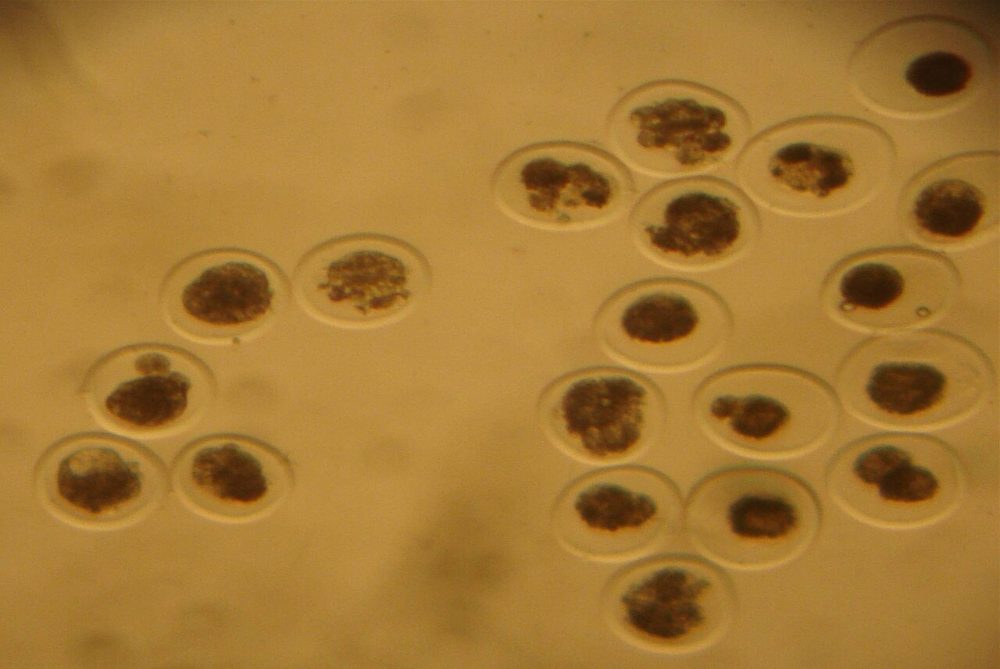

胚胎工程（上）：理论基础
本期导读
胚胎工程（上） · 受精 · 早期胚胎发育

视频原话 · 导读3 句
- 同学们好！这节课梳理人教版选择性必修三第二章第三节的上半部分——胚胎工程的理论基础。9.2s
- 高考常考受精前的准备、防止多精入卵的两道屏障，以及早期胚胎发育各阶段的特点。8.2s
- 我们按六个考点梳理，每个考点都讲清楚怎么考、怎么做。5.5s
胚胎工程的概念01#
胚胎工程：对生殖细胞、受精卵或早期胚胎细胞进行显微操作和处理，再将胚胎移植到雌性动物体内生产后代
体外受精
胚胎移植
胚胎分割
理论基础：哺乳动物受精和早期胚胎发育的规律
易错
操作对象是生殖细胞、受精卵和早期胚胎，不是体细胞；最终都要经过胚胎移植获得后代
视频原话4 句
- 考点一，胚胎工程的概念。它是对生殖细胞、受精卵或早期胚胎细胞进行多种显微操作和处理，然后将获得的胚胎移植到雌性动物体内生产后代的技术。14.8s
- 胚胎工程的技术包括体外受精、胚胎移植、胚胎分割等。5.8s
- 它的理论基础，是哺乳动物受精和早期胚胎发育的规律。5.4s
- 易错：胚胎工程的操作对象是生殖细胞、受精卵和早期胚胎，不是体细胞；最终都要经过胚胎移植才能获得后代。11.0s
受精前的准备02#
受精：精子与卵子结合形成合子（受精卵）的过程，在输卵管内完成
精子：获能
刚排出的精子不能立即受精，要在雌性生殖道中发生生理变化后，才获得受精能力
卵子：成熟到 MⅡ 期
在输卵管内进一步成熟，到MⅡ 期时才具备与精子受精的能力
易错
获能不是获得能量，而是获得受精能力；体外受精时精子也要先获能处理
视频原话4 句
- 考点二，受精前的准备。受精是精子与卵子结合形成合子，也就是受精卵的过程，在输卵管内完成。10.1s
- 精子获能：刚排出的精子不能立即与卵子受精，必须在雌性动物生殖道中发生相应的生理变化后，才能获得受精能力。11.3s
- 卵子的准备：卵子要在输卵管内进一步成熟，到MⅡ期时，才具备与精子受精的能力。8.4s
- 易错：获能不是获得能量，而是获得受精能力；体外受精时，精子也要先进行获能处理。8.9s
受精过程03#
获能的精子释放多种酶，溶解卵细胞膜外的结构，接触卵细胞膜
第一道屏障：透明带的生理反应，阻止后来的精子进入透明带
第二道屏障：卵细胞膜的生理反应，拒绝其他精子进入卵内
形成雄原核；卵子完成减数分裂Ⅱ、排出第二极体，形成雌原核 → 融合成受精卵
解题方法
防止多精入卵：透明带的生理反应 + 卵细胞膜的生理反应，两道屏障
视频原话5 句
- 考点三，受精过程。获能后的精子与卵子相遇时，释放多种酶，溶解卵细胞膜外的一些结构，同时借助自身的运动接触卵细胞膜。13.0s
- 精子触及卵细胞膜的瞬间，透明带迅速发生生理反应，阻止后来的精子进入透明带，这是第一道屏障。9.9s
- 精子入卵后，卵细胞膜也会立即发生生理反应，拒绝其他精子再进入卵内，这是第二道屏障。9.0s
- 精子入卵后，形成雄原核；卵子完成减数分裂Ⅱ，排出第二极体，形成雌原核。两者融合，形成受精卵。11.0s
- 考法：问如何防止多精入卵。解题方法：答透明带的生理反应和卵细胞膜的生理反应两道屏障。9.8s
受精的标志04#
| 比较项目 | 受精的标志 | 受精完成的标志 |
|---|---|---|
| 观察到 | 透明带和卵细胞膜之间有两个极体，或雌、雄原核 | 雌、雄原核融合 |
第一极体：减数分裂Ⅰ排出；第二极体：受精时（减数分裂Ⅱ）排出
雌、雄原核融合形成合子 → 受精过程完成
易错
区分“受精的标志”（两个极体或雌雄原核）和“受精完成的标志”（雌雄原核融合）
视频原话4 句
- 考点四，受精的标志。卵子受精的重要标志，是在透明带和卵细胞膜之间观察到两个极体，或者观察到雌、雄原核。11.9s
- 两个极体：一个是减数分裂Ⅰ排出的第一极体，另一个是受精时排出的第二极体。7.8s
- 而雌、雄原核融合形成合子，标志着受精过程的完成。5.8s
- 易错：区分“受精的标志”和“受精完成的标志”——前者是看到两个极体或雌雄原核，后者是雌雄原核融合。10.2s
早期胚胎发育05#
易错
卵裂期：单个细胞体积变小，DNA 总量增加，有机物总量减少；桑葚胚之前的细胞都有发育成完整胚胎的潜能
视频原话5 句
- 考点五，早期胚胎发育。受精卵进行有丝分裂，进入卵裂期：细胞数量不断增加，但胚胎的总体积并不增加，或略有缩小。12.4s
- 细胞数目达到 32 个左右时，形成实心的桑葚胚，这一阶段前的每个细胞都具有发育成完整胚胎的潜能。9.6s
- 接着细胞开始分化，形成囊胚，出现了囊胚腔。5.1s
- 囊胚继续发育，形成原肠胚，出现外胚层、内胚层等胚层分化和原肠腔。7.7s
- 易错：卵裂期，单个细胞的体积变小，细胞总DNA量增加，但有机物总量减少，因为胚胎还不能从外界获取营养。11.3s
囊胚的结构06#
内细胞团：个体较大，聚集在一端 → 发育成胎儿的各种组织
滋养层：个体较小，沿透明带内壁排列 → 发育成胎膜和胎盘
孵化：囊胚扩大，透明带破裂，胚胎从中伸展出来
解题方法
内细胞团成胎儿，滋养层成胎膜胎盘；胚胎分割、获取 ES 细胞都与内细胞团有关
视频原话4 句
- 考点六，囊胚的结构。聚集在胚胎一端、个体较大的细胞，叫作内细胞团，将来发育成胎儿的各种组织。10.2s
- 沿透明带内壁扩展和排列、个体较小的细胞，叫作滋养层，将来发育成胎膜和胎盘。8.3s
- 中间的腔叫囊胚腔。囊胚进一步扩大，会导致透明带破裂，胚胎从中伸展出来，这个过程叫孵化。9.8s
- 考法：识图填结构和去向。解题方法：记住“内细胞团成胎儿，滋养层成胎膜胎盘”；胚胎分割、取ES细胞都和内细胞团有关。12.8s
易错速查✓
先自己判断，再点按钮查看对错与解析。
- 1刚排出的精子能立即与卵子受精说法错误：精子要获能后才具备受精能力
- 2卵子要发育到MⅡ期才能受精说法正确。
- 3透明带反应和卵细胞膜反应能防止多精入卵说法正确。
- 4卵裂期胚胎总体积随细胞数增加而增大说法错误：总体积不增加或略有缩小
- 5滋养层细胞将发育成胎儿的各种组织说法错误：滋养层发育成胎膜和胎盘
- 6观察到两个极体或雌、雄原核是受精的标志说法正确。
两道屏障防多精，内团成体滋养盘！
视频原话 · 易错速查5 句
- 最后，用六道判断题检验一下。3.6s
- 判断一：刚排出的精子能立即受精？错，要先获能。判断二：卵子要发育到MⅡ期才能受精？对。11.4s
- 判断三：透明带反应和卵细胞膜反应能防止多精入卵？对。判断四：卵裂期胚胎总体积不断增大？错。12.1s
- 判断五：滋养层细胞发育成胎儿的各种组织？错，发育成胎膜和胎盘。判断六：观察到两个极体或雌雄原核是受精的标志？对。13.7s
- 六个考点串成一条线：两道屏障防多精，内团成体滋养盘。我们下期再见！7.8s
图片来源
图片来源：Wikimedia Commons —— Aspron《EMBRIONES BOVINOS》Public domain
Photo: Aspron, Public domain